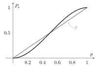
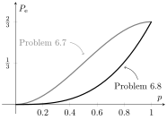

Lecture 6. Error probability of channel codes pdf
Introduction
In the second half of the course, we will study the problem of data transmission: how to reliably transmit information over a communication channel. The first lectures deal with channel codes, that is, schemes that introduce redundancy in order to combat channel errors. The last lectures deal with fundamental results in information theory: the highest amount of information that we can transmit and the properties of information measures (entropy and mutual information) in data processing systems.
We start by defining the problem. In contrast to data compression, where source codes represented a source without errors, here we will have errors due to the channel. We cannot completely eliminate the errors in general, but reduce them with codes. Consider $k$ information bits; we can map all possible sequences of information bits to $2^k$ messages indexed by integer numbers, that is the set $\{1,\ldots,M\}$ where $M=2^k$. To generalize this setting, we allow $M$ to be any number, not necessarily a power of two, although in most practical applications it is. In general, we say that $M$ messages carry $$ k=\log_2(M) \tag{6.1}$$ information bits, which can be a decimal number. We transmit the messages by encoding them to sequences of $n$ bits. That is, a channel code is given by the set of codewords $\{\boldsymbol{x}_1,\ldots,\boldsymbol{x}_M\}$ where each codeword $\boldsymbol{x}_m$ is a sequence of $n$ bits, for $m\in\{1,\ldots,M\}$. For example, the messages $\{1,2,3\}$ can be encoded to codewords $\{00,01,11\}$, all sequences of $n=2$ bits. Recall that the purpose here is data transmission, not lossless data compression, so that the concept of prefix-free code is not relevant. Instead, a good code will be the one that has some structure to combat channel errors such as bit flips. The rate of the code, denoted by $R$, is given by $$ R = \frac kn, \tag{6.2}$$ the amount of information bits per channel use. In the example above, the rate is $R=\frac{\log_2(3)}{2}\approx 0.792481$ bits per channel use.
Problem 6.1. Consider the channel code $\{000,111\}$. How many information bits are we transmitting with this code? What is the length of the code? What is the rate of the code?
Show solution
The code has two codewords, hence $M=2$ and $k=1$ bit of information. The length of the code is $n=3$, the amount of bits that each codeword has. Finally, the rate is $R=\frac 13$ bits per channel use.
The channel code is used over a discrete memoryless channel with transition (conditional) probability $P_{Y|X}(y|x)$. That is, upon the transmission of a given sequence $\boldsymbol{x}$, the probability of receiving a given sequence $\boldsymbol{y}$ is $$ P_{\boldsymbol{Y}|\boldsymbol{X}}(\boldsymbol{y}|\boldsymbol{x}) = \prod_{i=1}^n P_{Y|X}(y_i|x_i). \tag{6.3}$$
Problem 6.2. Consider the discrete memoryless channel where $X\in\{0,1\}$ and $Y\in\{a,b\}$ with transition probabilities $P_{Y|X}(a|0)=\frac 14$ and $P_{Y|X}(a|1)=\frac 14$. What is the probability that, upon transmitting the sequence $\boldsymbol{x}=010$, we receive $\boldsymbol{y}=aaa$?
Show solution
Since the channel is memoryless, we have that $ P_{\boldsymbol{Y}|\boldsymbol{X}}(aaa|010) = P_{Y|X}(a|0)^2 P_{Y|X}(a|1) = \frac{1}{64}$.
The goal of the decoder in data transmission is to guess (estimate) what was the transmitted message based on the channel output (observation). In the course we will study several decoders, all of them can be represented as a mapping between channel outputs $\boldsymbol{y}$ and estimated messages $\hat m = \phi(\y)$.
Example 6.3. A decoder for the channel code $\{101,010\}$ works as follows. Upon the reception of the out sequence $\boldsymbol{y}$ (note that the length of the received sequence is the same as the length of the transmitted sequence), the decoder looks at the first bit. If the first bit is $Y_1=0$ then $\hat m=2$, if the first bit is $Y_1=1$, then $\hat m = 1$. We can build the decoding table for all possible received sequences with this information, that is $$\begin{gather} \boldsymbol{y} \mapsto \hat m \tag{6.4}\\ 000 \mapsto 2 \tag{6.5}\\ 001 \mapsto 2 \tag{6.6}\\ 010 \mapsto 2 \tag{6.7}\\ 011 \mapsto 2 \tag{6.8}\\ 100 \mapsto 1 \tag{6.9}\\ 101 \mapsto 1 \tag{6.10}\\ 110 \mapsto 1 \tag{6.11}\\ 111 \mapsto 1. \tag{6.12}\end{gather}$$
In other words, a decoder is a partition of the set of output sequences ${\cal Y}$. In the next section, it will be convenient to define the subsets ${\cal D}_m$ and ${\cal E}_m$, respectively the sets of output sequences that are decoded into message $m$ and the set of output sequences that are not decoded into message $m$.
Example 6.4. The channel code $\{00,01,11\}$ is decoded as $\hat m = 1 + y_1 + y_2$. Then, the set of output sequences ${\cal Y}=\{00,01,10,11\}$ can be partitioned in the following way: ${\cal D}_1=\{00\}$ and ${\cal E}_1=\{01,10,11\}$, or ${\cal D}_2=\{01,10\}$ and ${\cal E}_2=\{00,11\}$, or ${\cal D}_3=\{11\}$ and ${\cal E}_3=\{00,01,10\}$.
Problem 6.5. Describe the decoding for the code in Example 6.4, where the decoder is $\hat m = \argmin_{m\in\{1,\ldots,M\}} d(\x_m,\y) $, and $d(\x,\y)$ returns the number of bit positions in which the sequences $\x$ and $\y$ do not match.
Show solution
For $\y=00$ we have that $d(\x_1,\y)=d(00,00)=0$, $d(\x_2,\y)=d(01,00)=1$ and $d(\x_3,\y)=d(11,00)=2$, so that $$ \hat m(\y)=\hat m(00) = \argmin_{m\in\{1,2,3\}} d(\x_m,\y) = \argmin \bigl\{ d(\x_1,\y) , d(\x_2,\y),d(\x_3,\y) \bigr\} = \argmin\{0,1,2\}=1, \tag{6.13}$$ since the minimum in the set $\{0,1,2\}$ is reached for $\x_1$, that is, when $m=1$. With the same procedure we obtain $\hat m(01)=2$ and $\hat m(11)=3$. For $\y=10$, however, we have a tie since both $\x_1$ and $\x_3$ are within the minimum distance to $\y$. In this case the decoder can return an error message or return $\hat m(10)\in\{1,3\}$ with equal probability. In the case of giving an error message, the decoding table would be as $$\begin{gather} \boldsymbol{y} \mapsto \hat m \tag{6.14}\\ 00 \mapsto 1 \tag{6.15}\\ 01 \mapsto 2 \tag{6.16}\\ 10 \mapsto e \tag{6.17}\\ 11 \mapsto 3, \tag{6.18}\end{gather}$$ and therefore ${\cal D}_1=\{00\}$, ${\cal E}_1=\{01,10,11\}$, ${\cal D}_2=\{01\}$, ${\cal E}_2=\{00,10,11\}$, ${\cal D}_3=\{11\}$ and ${\cal E}_3=\{00,01,10\}$.
If we transmit message $m$ and the channel output $\boldsymbol{y}$ is such that the decoder outputs an estimated message $\hat m\neq m$, we are making a mistake. The performance of a channel code is measured in terms of the probability of such event, called the error probability of the code.
Error probability
The error probability of a channel code $\{ \x_1, \ldots, \x_M\}$, used equiprobably over a channel with transition probability $P_{\Y|\X}(\y|\x)$ and decoded with a given decoding rule $\hat m = \phi(\y)$ is given by $$ P_{\rm e} = \frac 1M \sum_{m=1}^M P_{\rm e}(m), \tag{6.19}$$ where $P_{\rm e}(m)$ is the error probability when message $m$ is transmitted, that is $ P_{\rm e}(m) = \mathbb{P}\left[ \phi(\boldsymbol{Y}) \neq m | \boldsymbol{X} = \boldsymbol{x}_m \right]. $ As a conditional probability with respect to the random variable $\boldsymbol{Y}=(Y_1,\ldots,Y_n)$, the error probability of message $m$ can be calculated as $$\begin{align} P_{\rm e}(m) = \sum_{\boldsymbol{y} \in {\cal E}_m} P_{\boldsymbol{Y}|\boldsymbol{X}}(\boldsymbol{y}|\boldsymbol{x}_m), \tag{6.20} \end{align}$$ where recall that ${\cal E}_m$ is the set of channel output sequences $\boldsymbol{y}$ such that $\phi(\boldsymbol{y})\neq m$. Sometimes it will be convenient to calculate $P_{\rm e}(m)$ using the decoding region ${\cal D}_m$ instead. Since the probability of correct decoding and the probability of erroneously decoding are complementary probabilities, we have that $$ P_{\rm e}(m) = 1 - P_{\rm d}(m) = 1 - \sum_{\boldsymbol{y} \in {\cal D}_m} P_{\boldsymbol{Y}|\boldsymbol{X}}(\boldsymbol{y}|\boldsymbol{x}_m). \tag{6.21} $$
Example 6.6. Suppose that we want to transmit a single $k=1$ equiprobable information bit over a binary symmetric channel (BSC) with input $X\in\{0,1\}$, output $Y\in\{0,1\}$ and transition probability $P_{Y|X}(1|0)=P_{Y|X}(0|1)=p$, where $0<p<1$. To do so, we construct a set of $\smash{M=2^k=2}$ codewords $\{\x_1,\x_2\}$ for the message set $\{1,2\}$. For example, we can assign the information bit 0 to message 1, the information bit 1 to message 2, and try to protect this information by repeating the information bit $n=3$ times to obtain the channel code $\{000,111\}$. This code has rate $R=\frac{k}{n}=\frac 13$ bits per channel use. Upon the transmission over the channel, we have $2^n=8$ possible output sequences ${\cal Y}=\{000,001,010,011,100,110,101,111\}$. In order to decode the channel output, we must propose a decoding rule $\hat m = \phi(\y)$ for each $\y\in{\cal Y}$. For example, we can use majority decoding: we decode in favor of the bit that is received the most times. This leads to the following decoding table: $$\begin{gather} \boldsymbol{y} \mapsto \hat m \tag{6.22}\\ 000 \mapsto 1 \tag{6.23}\\ 001 \mapsto 1 \tag{6.24}\\ 010 \mapsto 1 \tag{6.25}\\ 011 \mapsto 2 \tag{6.26}\\ 100 \mapsto 1 \tag{6.27}\\ 101 \mapsto 2 \tag{6.28}\\ 110 \mapsto 2 \tag{6.29}\\ 111 \mapsto 2. \tag{6.30}\end{gather}$$ From the decoding table, we obtain the decoding and error regions ${\cal D}_1={\cal E}_2=\{000,001,010,100\}$ and ${\cal D}_2={\cal E}_1=\{011,101,110,111\}$. Notice that the conditions ${\cal D}_1={\cal E}_2$ and ${\cal D}_2={\cal E}_1$ are a consequence of having two messages and the choice of the decoding rule. In general, we may not have such property. We next calculate the error probability of the code. Since each information bit is equiprobable, the channel code $\{000,111\}$ will be used with equal probability, that therefore the error probability of the code can be written as $$ P_{\rm e} = \frac{P_{\rm e}(1) + P_{\rm e}(2)}{2}. \tag{6.31} $$ Think about $(6.31)$ when the information bit has, for example, probabilities $\bigl\{\frac 23,\frac 13\bigr\}$; how would the expression of $P_{\rm e}$ change? We continue with our example. To calculate $P_{\rm e}$ we need to determine $P_{\rm e}(1)$ and $P_{\rm e}(2)$. We start with the error probability of the first message. We can use either $(6.20)$ or $(6.21)$, that is: $$\begin{align} P_{\rm e}(1) &= \sum_{\boldsymbol{y} \in {\cal E}_1} P_{\boldsymbol{Y}|\boldsymbol{X}}(\boldsymbol{y}|\boldsymbol{x}_1) \tag{6.32}\\ &= \sum_{\boldsymbol{y} \in \{011,101,110,111 \}} P_{\boldsymbol{Y}|\boldsymbol{X}}(\boldsymbol{y}|000) \tag{6.33}\\ &= P_{\boldsymbol{Y}|\boldsymbol{X}}(011|000) + P_{\boldsymbol{Y}|\boldsymbol{X}}(101|000) + P_{\boldsymbol{Y}|\boldsymbol{X}}(110|000) + P_{\boldsymbol{Y}|\boldsymbol{X}}(111|000). \tag{6.34}\end{align}$$ Since the channel is memoryless, $P_{\boldsymbol{Y}|\boldsymbol{X}}(011|000)=P_{Y|X}(0|0)P_{Y|X}(1|0)^2$ and so on. Using the transition probabilities, we obtain $P_{\boldsymbol{Y}|\boldsymbol{X}}(011|000)= p^2(1-p)$, and similarly that $P_{\boldsymbol{Y}|\boldsymbol{X}}(101|000)=p^2(1-p)$, $P_{\boldsymbol{Y}|\boldsymbol{X}}(110|000)=p^2(1-p)$ and $P_{\boldsymbol{Y}|\boldsymbol{X}}(111|000)=p^3$. Combining these results, we have $$ P_{\rm e}(1) = p^3 + 3p^2(1-p) = 3p^2 -2p^3. \tag{6.35} $$ We can also obtain $(6.35)$ by $$\begin{align} P_{\rm e}(1) &= 1 - \sum_{\boldsymbol{y} \in {\cal D}_1} P_{\boldsymbol{Y}|\boldsymbol{X}}(\boldsymbol{y}|\boldsymbol{x}_1) \tag{6.36}\\ &= 1 - \sum_{\boldsymbol{y} \in \{000,001,010,100 \}} P_{\boldsymbol{Y}|\boldsymbol{X}}(\boldsymbol{y}|000) \tag{6.37}\\ &= 1 - \left( P_{\boldsymbol{Y}|\boldsymbol{X}}(000|000) + P_{\boldsymbol{Y}|\boldsymbol{X}}(001|000) + P_{\boldsymbol{Y}|\boldsymbol{X}}(010|000) + P_{\boldsymbol{Y}|\boldsymbol{X}}(100|000) \right) \tag{6.38}\\ &= 1 - \left( (1-p)^3 + 3p(1-p)^2 \right) \tag{6.39}\\ & = 1 - (2 p^3-3 p^2+1) \tag{6.40}\\ & = 3p^2 -2p^3. \tag{6.41}\end{align}$$ Following the same steps, we obtain that $P_{\rm e}(2) = 3p^2-2p^3$ and therefore $P_{\rm e}=3p^2-2p^3$. The advantage of repeating the bit becomes clear if we compare the error probability of the code $P_{\rm e}$ with the probability of a bit flip, which would correspond to transmitting the information bit without protection. We plot both in Figure 6.1.

As it can be appreciated, for $p\in\bigl(0,\frac 12\bigr)$, the repetition code $\{000,111\}$ outperforms (has a lower error probability) the unrepeated information bit. However, for $p\in\bigl(\frac 12,1 \bigr)$ the contrary happens! Well, if the receiver knows that $p>\frac 12$, what is a more plausible decoder rule $\phi(\y)$?
Problem 6.7. Calculate the error probability of the channel code in Example 6.6 when used with probability distribution $\bigl\{ \frac 13, \frac 23 \bigr\}$ over the binary channel with transition probability $P_{Y|X}(0|0)=1$ and $P_{Y|X}(0|1)=p$ with the majority decoding rule.
Show solution
The decoding and error regions ${\cal D}_1$, ${\cal D}_2$, ${\cal E}_1$ and ${\cal E}_2$ are the same as before since neither the code neither the decoding rule $\phi(\y)$ have changed. What has changed is the probability of transition, so we must recalculate the error probabilities for message 1 and message 2. We start as before with message 1, which is $$\begin{align} P_{\rm e}(1) &= \sum_{\boldsymbol{y} \in {\cal E}_1} P_{\boldsymbol{Y}|\boldsymbol{X}}(\boldsymbol{y}|\boldsymbol{x}_1) \tag{6.42}\\ &= \sum_{\boldsymbol{y} \in \{011,101,110,111 \}} P_{\boldsymbol{Y}|\boldsymbol{X}}(\boldsymbol{y}|000) \tag{6.43}\\ &= P_{\boldsymbol{Y}|\boldsymbol{X}}(011|000) + P_{\boldsymbol{Y}|\boldsymbol{X}}(101|000) + P_{\boldsymbol{Y}|\boldsymbol{X}}(110|000) + P_{\boldsymbol{Y}|\boldsymbol{X}}(111|000). \tag{6.44}\end{align}$$ However, since the channel is different, we have that $P_{\boldsymbol{Y}|\boldsymbol{X}}(011|000) = P_{\boldsymbol{Y}|\boldsymbol{X}}(101|000) = P_{\boldsymbol{Y}|\boldsymbol{X}}(110|000) = P_{\boldsymbol{Y}|\boldsymbol{X}}(111|000) = 0$ because $P_{Y|X}(1|0)=0$. Hence, $P_{\rm e}(1)=0$, meaning that with this code, this channel and this decoder, we never make a mistake when we transmit the first message. For message $2$ we rather have $$\begin{align} P_{\rm e}(2) &= \sum_{\boldsymbol{y} \in {\cal E}_2} P_{\boldsymbol{Y}|\boldsymbol{X}}(\boldsymbol{y}|\boldsymbol{x}_2) \tag{6.45}\\ &= \sum_{\boldsymbol{y} \in \{000,001,010,100 \}} P_{\boldsymbol{Y}|\boldsymbol{X}}(\boldsymbol{y}|111) \tag{6.46}\\ &= P_{\boldsymbol{Y}|\boldsymbol{X}}(000|111) + P_{\boldsymbol{Y}|\boldsymbol{X}}(001|111) + P_{\boldsymbol{Y}|\boldsymbol{X}}(010|111) + P_{\boldsymbol{Y}|\boldsymbol{X}}(100|111) \tag{6.47}\\ &= p^3 + 3p^2(1-p). \tag{6.48}\end{align}$$ Hence $$ P_{\rm e} = \frac 13 P_{\rm e}(1) + \frac 23 P_{\rm e}(2) = 0 + \frac 23 \left(p^3 + 3p^2(1-p) \right) = \frac 23 p^3 + 2p^2(1-p). \tag{6.49}$$
Problem 6.8. Consider the same code and channel as Problem 6.7 but with the following decoding rule: if $\y$ has at least one bit $1$ then $\hat m=2$, otherwise $\hat m=1$. What is the error probability of the repetition code now?
Show solution
Since the decoding rule has changed, the decoding table must be updated: $$\begin{gather} \boldsymbol{y} \mapsto \hat m \tag{6.50}\\ 000 \mapsto 1 \tag{6.51}\\ 001 \mapsto 2 \tag{6.52}\\ 010 \mapsto 2 \tag{6.53}\\ 011 \mapsto 2 \tag{6.54}\\ 100 \mapsto 2 \tag{6.55}\\ 101 \mapsto 2 \tag{6.56}\\ 110 \mapsto 2 \tag{6.57}\\ 111 \mapsto 2. \tag{6.58}\end{gather}$$ In this case, $P_{\rm e}(1)=0$ as before since $P_{\rm e}(1)=1 - P_{\rm d}(1) = 1 - P_{\Y|\X}(000|000)=1-1=0$, but now $P_{\rm e}(2)=P_{\Y|\X}(000|111)=p^3$. Finally, $$ P_{\rm e} = \frac 23 p^3. \tag{6.59} $$ We plot $P_{\rm e}$ in Problem 6.7 compared to $(6.59)$ in Figure 6.2. Clearly, this new decoder offers a better performance for all ranges of $0<p<1$.
